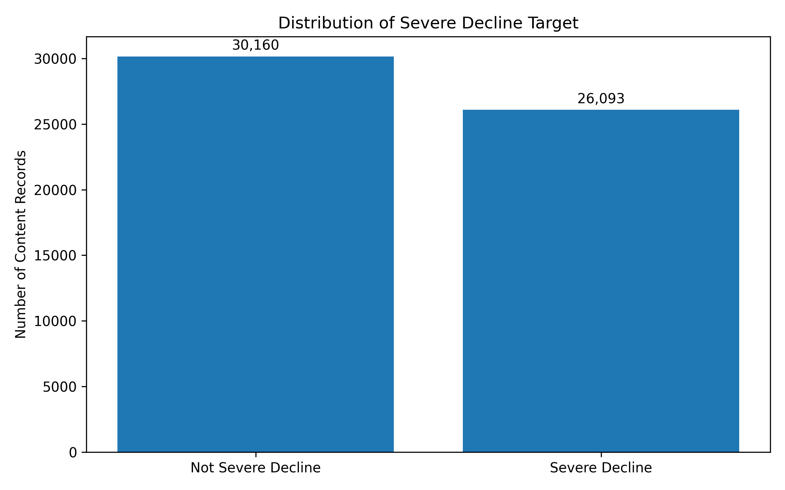
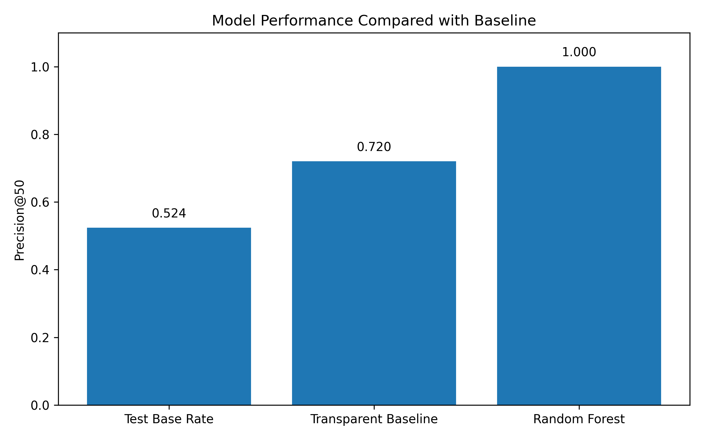
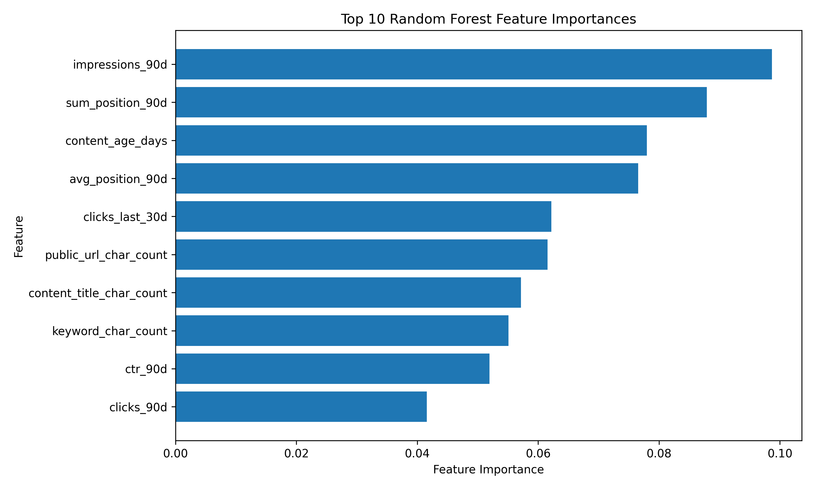
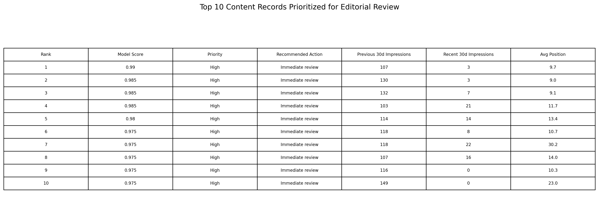

Abstract
This project investigates whether observable search performance, traffic, engagement, and content characteristics can help prioritize content records that are likely to experience severe decline. The analysis uses 56,253 content records from the FlyRank ML Internship dataset and defines severe decline as a reduction of at least 60% in recent impressions compared with the previous 30-day period. A client-level grouped train/test split was used to reduce overlap between clients during evaluation, and a Random Forest classifier was compared with a transparent rule-based baseline. On the same test split, the Random Forest achieved Precision@50 of 1.00 compared with 0.72 for the baseline. The resulting output is intended as a decision-support tool that ranks content records for human editorial investigation rather than automatically prescribing content changes.
1. Problem Framing
Content teams often manage many pages simultaneously, making it difficult to determine which records should receive editorial attention first. This project supports the decision of prioritizing content records for possible refresh or recovery investigation.
A false positive may cause unnecessary editorial review, while a false negative may cause a genuinely declining record to be missed. Machine learning can help organize many observable signals into a prioritized ranking, allowing human editors to investigate the highest-risk records first.
2. Data
The dataset contains observable content, search, traffic, engagement, and performance characteristics. Pseudonymous identifier columns were used for grouping purposes only and were not included as predictive features.
Target Definition
The resulting target distribution contained 26,093 severe decline records and 30,160 non-severe decline records.

Figure 1. Distribution of severe and non-severe decline records.
3. Methodology
Feature Selection
Features included observable characteristics such as keyword and title properties, historical impressions and clicks, traffic signals, content age, click-through rate, average position, and engagement-related measures.
Identifier columns were excluded from the feature set. Label-derived fields
such as trend_direction and trend_pct were also
excluded to reduce target leakage.
Validation Design
A grouped train/test split was performed at the client level so that clients appearing in the training set did not also appear in the test set.
Models
- Transparent rule-based baseline
- Random Forest Classifier
Both approaches were evaluated on the same held-out client-level test split using Precision@50 as the primary ranking metric.
4. Results
The Random Forest model was compared directly with the transparent baseline using the same evaluation split.
| Method | Precision@50 |
|---|---|
| Test Base Rate | 0.524 |
| Transparent Baseline | 0.720 |
| Random Forest | 1.000 |

Figure 2. Precision@50 comparison between the test base rate, transparent baseline, and Random Forest model.
5. Interpretation
Feature importance analysis indicates that historical search visibility, position-related signals, content age, and recent click activity were among the most influential features used by the Random Forest model.

Figure 3. Top features by Random Forest importance.
Top Observed Features
- Impressions over the previous 90 days
- Search position-related signals
- Content age
- Average search position
- Recent click activity
- URL and content title characteristics
- Click-through rate
Feature importance reflects how the model used variables for prediction and should not be interpreted as evidence that any individual feature causes content decline.
6. Ranked Recommendations
The final model output is converted into a ranked action list for editorial decision-support. Records with the highest predicted probability of severe decline are prioritized for review.
Priority Framework
- High priority: probability ≥ 0.80
- Medium priority: probability ≥ 0.60 and < 0.80
- Low priority: probability < 0.60

Figure 4. Top 10 ranked recommendations generated by the model.
These recommendations are not automatic instructions to change content. A human editor should review the underlying content and performance context before deciding on any intervention.
7. Limitations & Honest Framing
- The severe decline target is an operational proxy based on impression change and does not capture every possible form of content underperformance.
- Model performance was measured on one client-level grouped split and may vary on future datasets or different content populations.
- The model identifies patterns associated with the defined target but does not establish causal reasons for performance decline.
- Feature importance should not be interpreted as causal impact.
- A high predicted probability does not guarantee that a particular content intervention will improve performance.
- Recommendations should remain subject to human editorial judgment.
8. Reproducibility
| Dataset | FlyRank ML Internship Dataset |
|---|---|
| Lane | Decline Recovery |
| Model | Random Forest Classifier |
| Validation | Client-level grouped train/test split |
| Test Size | 20% |
| Primary Metric | Precision@50 |
| Random Seed | 42 |
9. Acknowledgments & Data Credit
Built on the FlyRank ML Internship dataset.
This project was developed as part of the FlyRank ML Internship capstone. The analysis uses public-safe aggregated and pseudonymous data and does not expose client-identifying information.